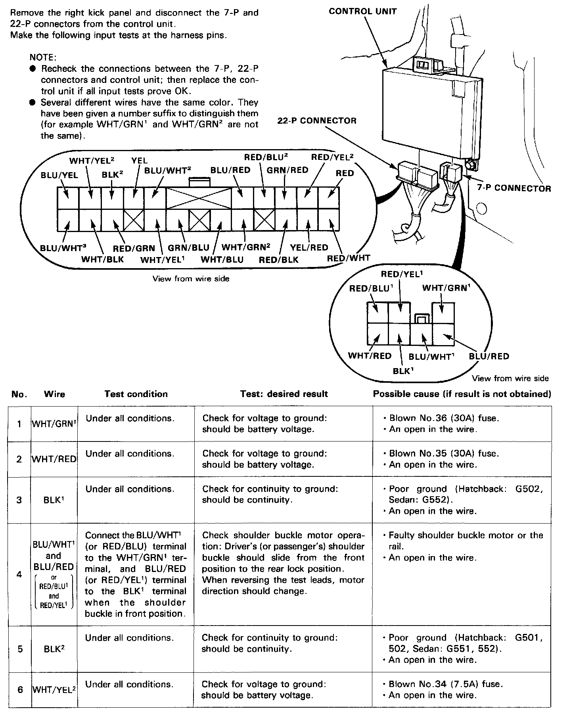
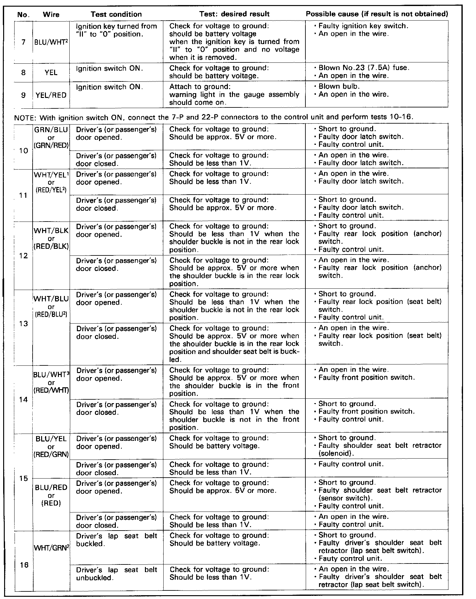

Operation CHARM
: Car repair manuals for everyone.
Home
>>
Acura
>>
1991
>>
Integra L4-1834cc 1.8L DOHC FI
>>
Repair and Diagnosis
>>
Restraints and Safety Systems
>>
Relays and Modules - Restraints and Safety Systems
>>
Seat Belt Control Module
>>
Testing and Inspection
Seat Belt Control Module: Testing and Inspection
Part 1 Of 2:

Part 2 Of 2:
